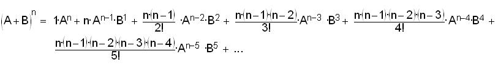

Using the binomial expansion to find e
Using the binomial expansion from chapter 9, the first 6 terms of (A + B)n are: 
Substituting 1-> A and 1/n-> B
We'll simplify this: in the terms with 1 to any power, that's 1, and the powers of n are exchanged with the factorials since they are multiplied, to get:
We've gone out 6 terms of the binomial expansion, now we'll look at what happens when we let n -> infinity. All the fractions with n's will go to 1 (subtracting 1 and 2, etc. in the top as n gets very large, won't affect that), and we get: